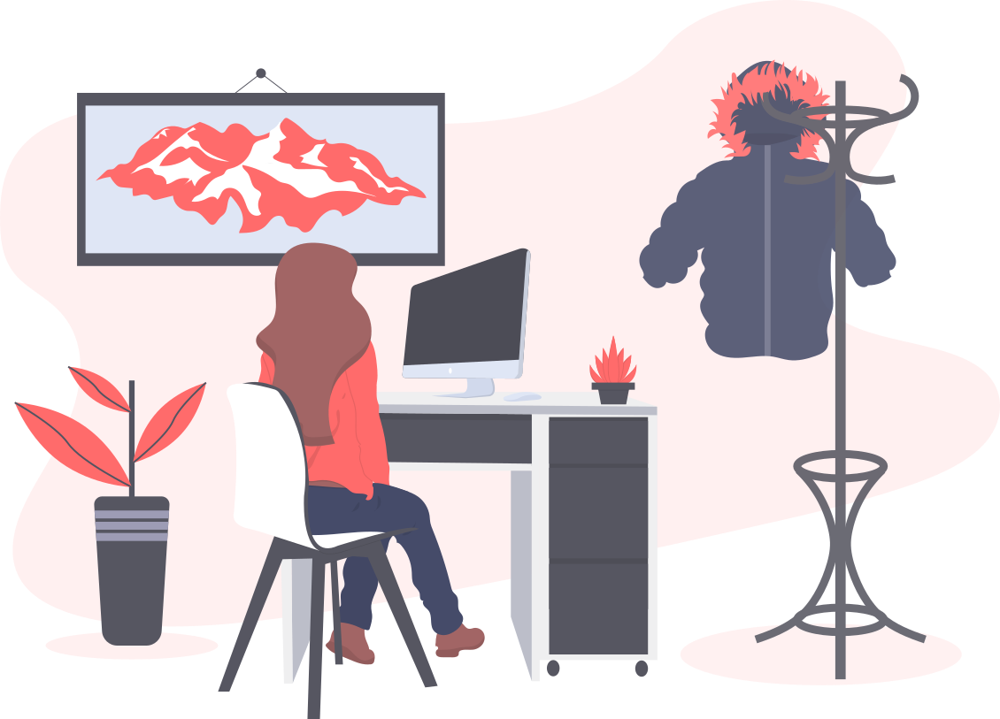

Changelog from my journey
I've been working at GitGuardian for 4 months.
Here's a timeline of my journey.

Oct 2025 - Present
Building and scaling Python backend for secret-detection systems.
- Developed and maintained Django-based backend services with focus on scalability and reliability.
- Improved detection pipelines and integrated workflows with GitLab CI/CD, Linear, and Elasticsearch.
PythonDjangoBackendGitLabLinearElasticsearchScalability
Aug 2025 - Dec 2025